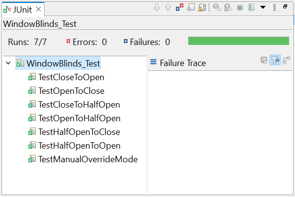
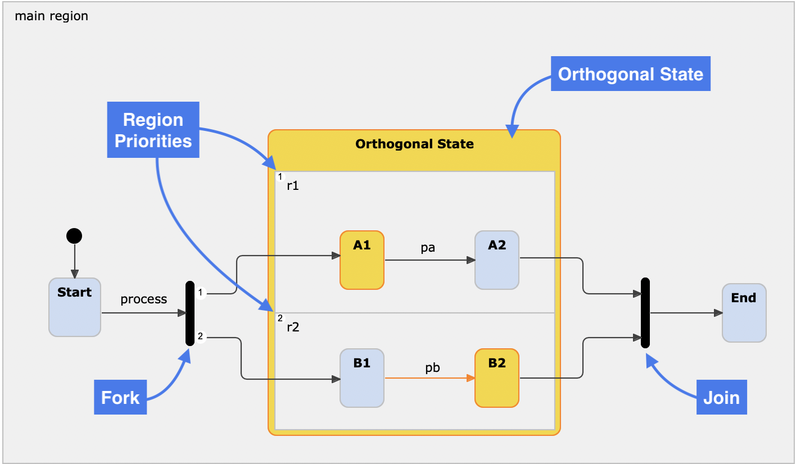
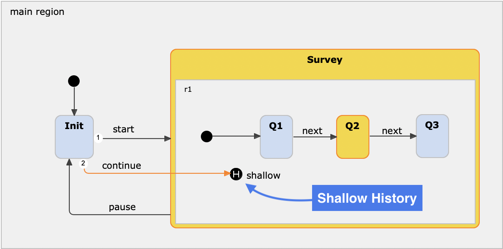
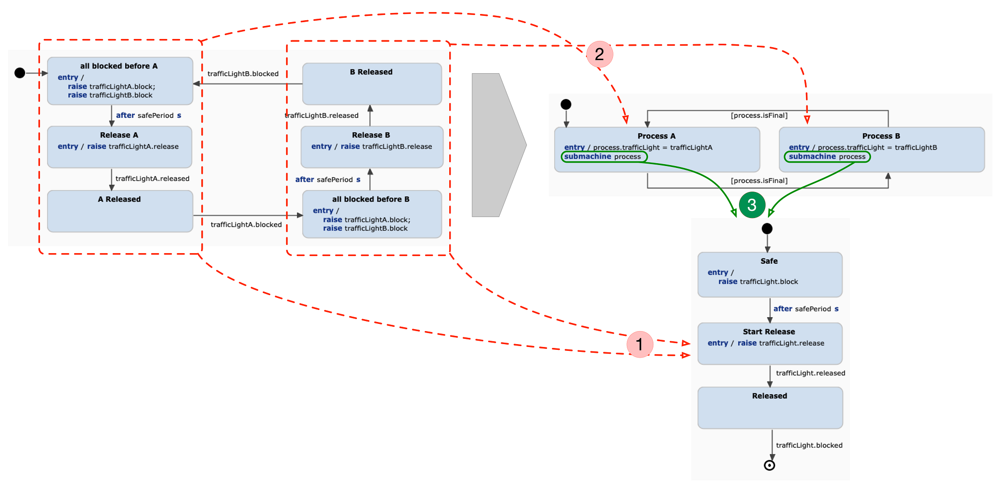

CP8327/CPS865 Model-Driven (Software) Engineering
Modelling, Simulation and Code Synthesis with Itemis Create
Exercise 1
In this exercise, you will model and simulate the controller of a smart window blinds application with basic smart window blind functionalities.
Requirements
R1. The smart window blinds system can switch between Smart Control Mode and Manual Override Mode.
R2. The smart window blind should be able to open fully, close fully, and partially open in Smart Control Mode.
Extend the statechart
You have to extend the provided statechart using the Itemis Create statechart editor.
- Import this project into Itemis CREATE.
- Open the statechart exercise1.ysc by double-clicking the file in the project explorer.
- Follow the hints which are provided as comments in the model and add states, transitions, and declarations. Use composite states, if needed.
- Define trigger and actions on the transitions. Remember the syntax is 'trigger / action'
- Use time-triggered events (e.g. after 10s) when needed.
- Hint: Try Ctrl-Space when editing text to get proposals.
Simulate the statechart
Any time while modelling you can run the simulation to check if everything is working according to the requirements. Simply right-click in the model and choose 'Run As > Statechart Simulation' from the context menu. You can even edit the statechart during simulation. When you save the changes you will be asked to terminate or restart the simulation.
Exercise 2
How do we make sure that the smart window blinds work according to the specified requirements? You will need to define tests for your statechart.

Requirements
R3. Fix the broken tests. Be aware that the statechart and the test cases may have failures.
R4. Try to reach 100% coverage.
Complete the tests
The JUnit and Coverage views indicate that:
The tests are incomplete because the coverage is not at 100%.
Simulate
Now, simulate the statechart by right-clicking on the WindowBlinds_Test.sctunit file and run as SCT Unit.
Exercise 3
Statecharts define reactive behavior that interacts with the environment. In this exercise, code is generated from the smart window blinds statechart. This code is then integrated with a simple graphical UI of the smart window blind.

Requirements
R5. Generate source code from the statechart, and integrate the UI to the generated source code.
R6. The UI must be able to control the smart window blind behaviour, triggering changes in open/half_open/close state of the blind.
R7. Add additional connections from Exercise 4 to support all functionalities introduced in later exercises.
The state machine is not yet attached to the UI. Open the Java class SmartBlindsCtrl.java in exercise3/(default package) and follow the instructions that you will find in the source code comments.
Simulate
Now, simulate the UI by right-clicking on the project folder and run as Java application.
Exercise 4
In this exercise, the smart window blinds auto-adjustment components must be integrated in the dashboard. This exercise introduces orthogonal regions.

Image Source: https://www.itemis.com/en/products/itemis-create/documentation/user-guide/quick_ref_orthogonality
Requirements
R8. The smart window blind should automatically open and close based on the transition between day and night. This should be modelled using orthogonal regions.
R9. The clock statechart is provided and has already been imported. Use its hour value, which changes every second.
R10. The smart window blind's temperature status must be monitored and modelled using orthogonal regions.
R11. The smart window blind should automatically close halfway if the room becomes hot.
R12. The smart window blind should close automatically if the room temperature becomes too high.
R13. The smart window blind should include a Child Mode that disables user commands.
R14. However, automatic adjustment features should still be able to open and close the blinds.
Simulate
Now, simulate the statechart by right-clicking on the SmartBlinds.ysc file and run as Statechart Simulation.
Exercise 5
This exercise highlights the use of histories. Go into detail with shallow/deep histories.
It should be possible to interrupt the smart window blind behaviour during its regular autonomous operation.

Image Source: https://www.itemis.com/en/products/itemis-create/documentation/user-guide/quick_ref_history_nodes
Requirements
R15. The statechart model must contain shallow/deep history state.
R16. When resuming from the manual override mode, the last scheduled regular or child mode state should be restored.
Simulate
Now, simulate the statechart by right-clicking on the SmartBlinds.ysc file and run as Statechart Simulation.
Exercise 6
In this exercise, you will model a hub of three smart window blinds using the multi-statechart feature in itemis Create. The skeleton model for the hub is provided, but must be completed according to the requirements.

Image Source: https://www.itemis.com/en/products/itemis-create/documentation/user-guide/multi_state_machine_modelling
Requirements
R17. The hub statechart must contain orthogonal regions based on the number of smart window blinds connected to the hub.
R18. The hub must be able to open, half-open, and close each smart window blind unit separately.
R19. The hub statechart must be able to control the Regular Mode and Child Mode states of all smart window blind units.
R20. The hub must have a System OFF state that will set all smart window blind units to manual override mode.
Simulate
Now, simulate the statechart by right-clicking on the WindowBlindsHub.ysc file and run as Statechart Simulation.